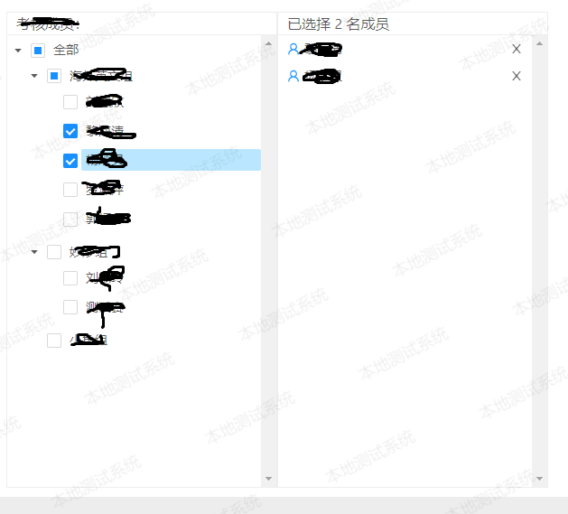

实现的图：§

ts§
import { ResourceLoader } from '@angular/compiler';
import { Component, OnInit } from '@angular/core';
import { NzMessageService, NzFormatEmitEvent } from 'ng-zorro-antd';
import { Router } from '@angular/router';
// moment插件
import * as moment from 'moment';
@Component({
selector: 'app-example',
templateUrl: './example.component.html',
styleUrls: ['./example.component.css']
})
export class ExampleComponent implements OnInit {
constructor(private router: Router, private message: NzMessageService) {
}
into(){
this.router.navigate([this.router.url]);
}
// 树组件
// 默认选中复选框
defaultCheckedKeys = []
// // 默认展开项
defaultExpandedKeys = ['g0']
// 删除选中成员
deleteUserNumber(item, index) {
// console.log(item,index)
const userIdList = [];
// this.selectTreeValue = this.selectTreeValue.
// if(item.userId)
// this.selectTreeValue = this.selectTreeValue.filter(d => d.item.userId !== item.userId);
this.selectTreeValue.splice(index, 1)
for (const value of this.selectTreeValue) {
// console.log(value)
if (value.userId) {
if (value.userId !== item.userId) {
userIdList.push(value.userId)
}
} else if (value.key) {
if (value.key !== item.key) {
userIdList.push(value.key)
}
}
}
// 默认选中
this.defaultCheckedKeys = userIdList
// 默认展开全部
this.defaultExpandedKeys = ['g0']
this.selectTreeNum = this.selectTreeValue.length
}
nodes = [
{
title: '全部',
key: 'g0',
expanded: true,
children: [
{
title: '海外英文组',
key: '0-0',
children: [
{ title: '刘慧欣', key: '0-0-1', isLeaf: true , checked: false},
{ title: '黎海清', key: '0-0-2', isLeaf: true , checked: false},
{ title: '杨妙灵', key: '0-0-3', isLeaf: true , checked: false},
{ title: '罗淑萍', key: '0-0-4', isLeaf: true , checked: false},
{ title: '郭柯芯', key: '0-0-5', isLeaf: true , checked: false}
],
checked: false
},
{
title: '妙妙组',
key: '0-1',
children: [
{ title: '刘佩玲', key: '0-1-1', isLeaf: true , checked: false},
{ title: '测试赛', key: '0-1-2', isLeaf: true , checked: false},
],
checked: false
},
{
title: '小鱼组',
key: '0-2',
isLeaf: true,
checked: false
}
]
},
];
// parentTreeValue;
// childTreeValue = [];
selectTreeValue;
selectTreeNum = 0;//选中的数量
nzEvent(event: NzFormatEmitEvent): void {
// let parentValue;
// 只有选中才进行赋值
if (event.eventName === 'check') {
// console.log(event)
// console.log(event.keys)
const SelectArr = []
for (const item of event.checkedKeys) {
// console.log(item.key)
if (item.key) {
// 第一级
if (item.level === 0 && item.origin.checked === true) {
// console.log('level0:', event.checkedKeys)
//console.log(item.service.checkedNodeList)
for (const value of item.service.checkedNodeList) {
// console.log(value.level)
if (value.level === 2) {
SelectArr.push(value)
// console.log(SelectArr)
}
}
// 第二级
} else if (item.level === 1 && item.origin.checked === true) {
// console.log('level1:', event.checkedKeys)
for (const value of item.parentNode.children) {
if (value.origin.checked === true) {
if (value.origin.children) {
// console.log(value.origin.children)
for (const i of value.origin.children) {
SelectArr.push(i)
}
}
}
}
// 第三级
} else if (item.level === 2 && item.origin.checked === true) {
// console.log('level2:', event.checkedKeys)
for (const value of item.parentNode.origin.children) {
if (value.checked === true) {
SelectArr.push(value)
}
}
}
}
}
// console.log(SelectArr)
// 去重重组
this.selectTreeValue = [...new Set(SelectArr)]
// this.selectTreeValue = SelectArr
// console.log(this.selectTreeValue)
this.selectTreeNum = this.selectTreeValue.length
// console.log(this.selectTreeValue)
}
}
ngOnInit() {
console.log(moment().format('HH:mm:ss') > '06:00:00')
}
}
html§
<div class="layout" style="background: #ffffff;padding: 0 10px 10px;">
<p>树形控件antd</p>
<div class="TreeSection" style="width: 600px;">
<div class="leftTree">
<p>考核成员：</p>
<div class="leftTree_content">
<nz-tree [nzData]="nodes" nzBlockNode nzExpandAll nzCheckable nzMultiple [nzCheckedKeys]="defaultCheckedKeys" (nzCheckBoxChange)="nzEvent($event)">
</nz-tree>
</div>
</div>
<div class="rightSelect">
<p>已选择 {{selectTreeNum}} 名成员</p>
<div class="rightSelect_content">
<ul>
<li *ngFor="let item of selectTreeValue;let i=index">
<i nz-icon style="margin-right: 5px;color: #1890ff;" nzType="user"
nzTheme="outline"></i><span>{{item.title}}</span><span style="float: right;"
(click)="deleteUserNumber(item,i)"><i nz-icon nzType="close" nzTheme="outline"></i></span>
</li>
<!-- <span style="float: right;" (click)="deleteUserNumber(item.key)"><i nz-icon nzType="close" nzTheme="outline"></i></span> -->
</ul>
</div>
</div>
</div>
</div>
css§
/* 树组件 */
.TreeSection {
overflow: hidden;
}
.leftTree,
.rightSelect {
border: 1px solid #eeeeee;
width: 50%;
}
.leftTree {
float: left;
}
.rightSelect {
float: right;
}
.leftTree p,
.rightSelect p,
.MemberList p {
font-size: 16px;
margin: 0;
padding: 0 10px;
border-bottom: 1px solid #eeeeee;
}
.leftTree_content,
.rightSelect_content {
height: 500px;
overflow-y: scroll;
overflow-x: hidden;
-webkit-user-select: none;
-moz-user-select: none;
-ms-user-select: none;
user-select: none;
}
.rightSelect_content ul {
margin: 0;
padding: 0 10px;
}
.rightSelect_content ul li {
list-style: none;
line-height: 30px;
}
::ng-deep .ant-tree.ant-tree-block-node li span.ant-tree-checkbox+.ant-tree-node-content-wrapper{
overflow: hidden;
text-overflow: ellipsis;
white-space: nowrap;
}